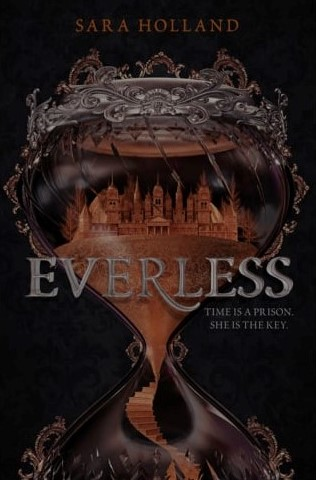
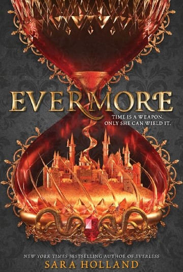

Everless features Jules Ember and her rough journey to help her father.
In the kingdom of Sempera, their currency is time. Specifically, time turned to coins. Jules'
father is struggling to get through each day and Jules has decided to help.
She embarks on an adventure to Everless to work as a servant, where forgotten memories and unexpected events
unfold and uncover before her.

Evermore is the sequel to Everless. The ending of the previous book was left open,
without closure, and the second (and last) book of the series finally gives the much needed closure
from the first book.
Evermore follows Jules once again as she looks to fix a mess revolving around her. To prevent lives
being harmed, she puts her own life on the line, now looking to defeat her enemy.
She encounters twists and turns, and even more confusions as she realizes she knows next to nothing
as to why the mess is around her. Good thing she has Liam to help her through her hardships- although they
started rough.